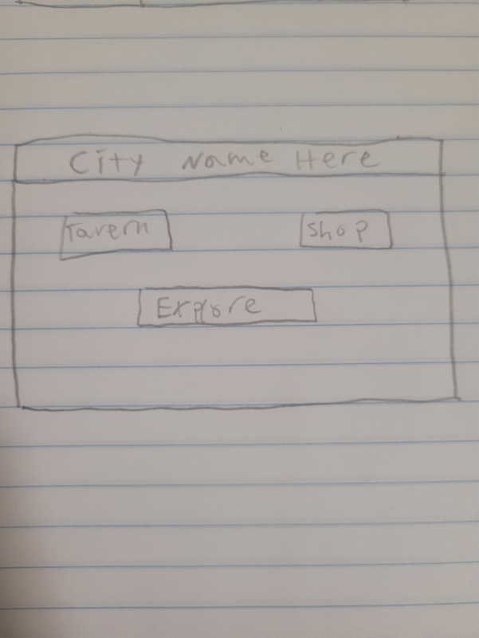
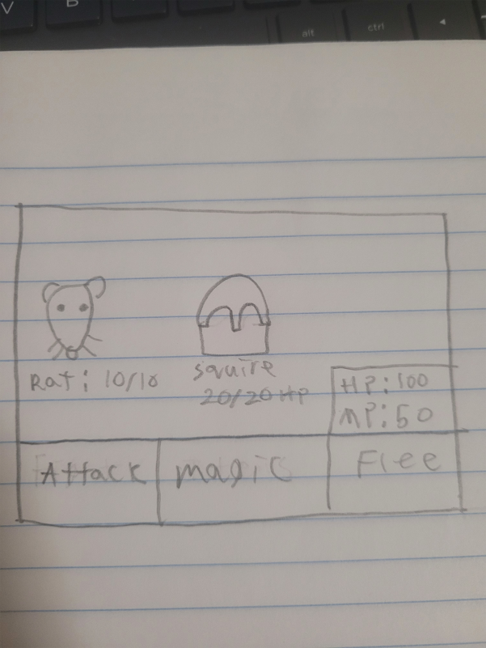

High Concept
The player traverses through a dungeon filled with nefarious traps and deadly monsters in search of wealth and glory!
Genre
The genres will be action, adventure, and rpg.
Platform
The game will likely be mobile friendly, but not specifically designed for it. It will be designed for desktop.
Story
The brave (Insert player name here) must go forth and venture into a dungeon to vanquish deadly foes (totally not giant rats) and earn fame, fortune, and glory!
Style
I will probably end up with a basic stick figure-esque design, since I'm pretty terrible at drawing. However, if I had any artistic talent/an artistic team behind me, I'd aim for something more cartoonish.
Gameplay
The game will be primarily controlled by the mouse clicking different pre-generated buttons. These will incluce access to menus like the item shop, inventory, or tavern.
Mockups
 About the Developer
My name is Joshua Tyson, I'm a 2nd year GDD major with no minor, and I'm skilled in HTML, C#, and CSS. I'm interested in story telling and RPG creation.
Documentation
The development process for this game was fairly standard. I had an idea and a deadline (read: motivation) so I whipped something up on time. I'd recently gotten back into a few text-based rpgs, and they were also one of the first games I ever played. I decided to pay homage to that as well as one of my other favorite genres: rougelikes. That's where the title came from, a simple play on words from the title "Darkest Dungeon." It took a while to get all the functionality I wanted in, and even then I had to cut things. I wanted to do a turn-based combat system, maybe with multiple enemies and a magic system, but the more I tried to make it work the more I realized I was in over my head. So I cut that and decided on a pretty standard auto-battle system. I got a simple timer system from online (with credit in the code) so the player could actually keep up with the combat and flee if they were going to die. Fun fact, the two named characters in this game, Rejsende and Maxine, are both original characters of mine. Rejsende is a god from one of my D&D campaigns, while Maxine is a medic in an as-of-yet unwritten sci-fi novel.
Images
I got all my images from the same website (which is super cool by the way). It uses AI to generate different prompts in different art styles. I used the Fantasy style for all my images. They are randomly generated so its unlikely they'll be recreatable.
Link to the art website! Link to the js timer code